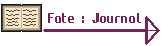
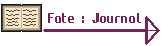

Programme codee en Python en Poo avec la Librairie Matplotlib sur Pycharm
Le Labyrinthe Empile
Le generateur de Labyrinthe, genere des labyrinthe
aleatoirement avec le nombre un nombre de case x
et un nombre y, il range tout les murs dans une pile
qu'il melange a fin de cree un labyrinthe aleatoire avec
un systeme de fusion des chemins.

Du Debut A La Fin !
Les Labyrinthe cree dans ce programme sont cree
en POO et donc possede leur systeme de zone propre,
permettant au Labyrinthe d'etre sur de possede une entre
et une sortie et donc le bon fonctionnement du programmes
Conclusion
Ce projet a ete un des projets qui ma rendu bien serieux dans mon codage et a ete tres enrichissant. il a ete un projet qui a fait suite au cours sur la POO et reutilisais ces capacite mais au aussi ete un projet en complete autonomie, après la rencontre de quelque probleme organisation et un changement de facon de travailler nettement meilleurs, j'en ai tire beaucoup de lecon.


 
